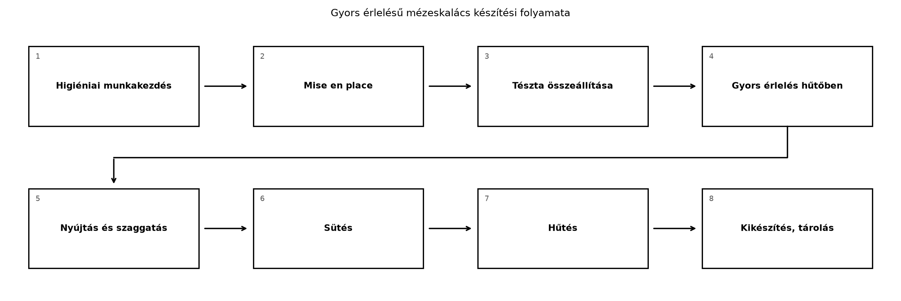

A mézes tészták a cukrászat egyik legrégebbi, legszabályozottabb és legtöbb hibalehetőséget rejtő tésztacsoportja. A műhelyben a leggyakoribb helyzet: karácsony előtt nagy tételben kell mézeskalácsot vagy mézes tortalapot sütni, és a tészta vagy túl kemény lesz, vagy ammóniaszagú, vagy egyenetlenül barnul. Az alábbiakban lépésről lépésre felépítjük, miért viselkedik másképp a mézes tészta, mint egy egyszerű omlós vagy élesztős tészta, és hogyan lehet a kémiai lazítást, a mézet és a pihentetést biztonságosan irányítani.
A mézes tészta nemcsak édes, hanem egyben „ragadós”, sűrű, magas cukortartalmú massza. Ha a tésztát rosszul készítjük el, a sütőben megfolyik, a felülete felhólyagosodik, a belseje szalonnás lesz, vagy a kész terméken érezhető az ammónia szúrós szaga. A méz savassága és invertcukor-tartalma miatt a kémiai lazítók másképp működnek, mint egy egyszerű sütőporos piskótánál. Ráadásul a hagyományos mézeskalács-tésztát hetekig érlelik, ami a mai gyors cukrászüzemi gyakorlatban nem mindig kivitelezhető. Ezért pontosan ismerni kell a hagyományos és a gyors érlelés különbségét is.
Továbbvitt eredmény. Az itt bemutatott mézes lapokat és mézeskalácsot később használjuk fel: a mézes lapok a Szeletek: jellemzők, műveletek és termékek alfejezetben tortaalapként vagy rétegelt szeletekben (például mézes krémes, Gerbeaud-szelet) jelennek meg; a mézeskalácsból készült díszek és formák a Sablonok: pasztillarajzok, térbeli és figurális sablonok részben, a tésztakészítés anyaghányad-számítása pedig a Tészták és kisült termékeik anyaghányad-számítása, a tésztakészítés higiéniája alfejezetben épül tovább.
Képzeljünk el egy sűrű, ragacsos masszát, amelyben a liszt, a méz, a cukor, a tojás, a zsiradék és a fűszerek együtt egy olyan közegbe kerülnek, ahol a víz egy része a mézhez és a cukorhoz kötődik. A tészta nem viselkedik sem klasszikus lágy, sem kemény tésztaként. A sütőben a hő hatására a kémiai lazítószer gázokat fejleszt, a méz invertcukra barnul, a fűszerek illóolajai felszabadulnak, és a tészta gyorsan megszilárdul. Ha a lapot túl vastagra nyújtjuk, a belsejében rekedő ammónia nem tud távozni, ezért a termék szúrós szagú lesz. Ezt a folyamatot mutatja be az alábbi folyamatábra is.

Definíció. A mézes tészta olyan cukrászati tésztacsoport, amelyben a tészta jellemző édesítője a méz, és a lazítás általában kémiai úton, szalalkálival, hamuzsírral, szódabikarbónával vagy ezek kombinációjával történik. A tésztát jellemzően vékonyra nyújtva, magas hőfokon, rövid idő alatt sütik. A magas méz- és cukortartalom miatt a termék hosszabb eltarthatóságú, de hajlamos a túlzott barnulásra és a kiszáradásra.
A mézes tészták csoportosítása felhasználás szerint:
| Termékcsoport | Jellemző vastagság | Lazítás | Felhasználás |
|---|---|---|---|
| Mézeskalács | 3–5 mm | szalalkáli, hamuzsír | szaggatott figurák, díszek |
| Puszedli | 8–12 mm | szódabikarbóna (savas összetevővel), kevés szalalkáli (ellenőrizendő: receptúra) | domború, mázas aprósütemény |
| Mézes lapok | 2–3 mm | szalalkáli, sütőpor | tortaalap, rétegelt szelet |
| Mézes ostya/jellegű | 1–2 mm | vegyes, receptfüggő | vékony ropogós betét |
Szabály. A mézes tésztában a méz nemcsak édesítőszer, hanem vízmegkötő, barnulást elősegítő, savasságot és aromát adó anyag. A méz invertcukor- és savtartalma aktiválja a szódabikarbónát, és hozzájárul a Maillard-reakcióhoz. A mézet ezért nem szabad 60 °C fölé hevíteni, mert értékes aromái, enzimjei károsodnak, és a tészta veszít jellegéből (ellenőrizendő: a gyakorlati hőfokhatár pontos forrása).
A mézes tésztákhoz használt alapanyagok:
A mézes tészták klasszikus lazítói nem a sütőpor, hanem a szalalkáli és a hamuzsír, valamint a szódabikarbóna. A kémiai lazítás lényege, hogy a tésztában lévő vegyület hő hatására vagy savval reagálva szén-dioxidot () fejleszt, amely a tésztát fellazítja.
Szalalkáli (ammónium-hidrogén-karbonát, E503). Képlete: . Hevítéskor bomlik:
Az ammónia () szúrós szagú gáz, ezért a szalalkálit kizárólag vékony, jól átsülő termékhez használjuk, ahol az ammónia a sütőtérből el tud távozni. A szalalkáli por belélegzése is irritálja a légutakat, ezért óvatosan, porzásmentesen kell adagolni.
Hamuzsír (kálium-karbonát, E501). Képlete: . Savas közegben szén-dioxidot fejleszt, például a méz természetes savjaival vagy egy kis ecettel. A hamuzsír lúgossága miatt a tészta sötétebb színt kap, és jellegzetes íze van. A mézeskalács-hagyományban a hamuzsír volt a leggyakoribb lazító, mert a hosszú érlelés alatt is viszonylag stabil, és nem ad ammóniaszagot.
Szódabikarbóna (nátrium-hidrogén-karbonát, E500). Képlete: . Savval reagálva szén-dioxidot fejleszt:
A mézes tésztában a méz savassága elegendő lehet a reakcióhoz, de ha a tészta nem elég savas, maradék szóda szappanos, keserű ízt ad. Ezért szódabikarbónát csak akkor használunk, ha a tésztában savas összetevő (méz, savanyú tej, borkő, citromlé) is van, vagy ha kis adagban kombináljuk más lazítóval.
A kémiai lazítók összehasonlítása:
| Lazítószer | E-szám | Reakció | Előny | Tipikus hiba |
|---|---|---|---|---|
| Szalalkáli | E503 | hőre NH3 + CO2 + H2O | erős lazítás, vékony tésztához | ammóniaszag, ha vastag a termék |
| Hamuzsír | E501 | savval CO2-t fejleszt | nincs ammóniaszag, hagyományos | lúgos íz, ha túladagolják |
| Szódabikarbóna | E500 | savval CO2-t fejleszt | olcsó, enyhe szín | szappanos íz, ha nincs sav |
Higiénia. A kémiai lazítószerek adalékanyagok, ezért a felhasználási feltételeket a 1333/2008/EK rendelet és a Magyar Élelmiszerkönyv szabályozza (ellenőrizendő: E-számok, maximális adagolási szintek). A mézes tésztában a lazítószert mindig a gyártói adatlap és a receptúra szerint, mérve, dokumentálva adjuk hozzá. A túladagolás nemcsak élvezeti hiba, hanem élelmiszerbiztonsági kockázat is lehet, ezért a mérlegelést a receptúrához kötöttük.
Figyelem. A szalalkáli és a hamuzsír pora irritálhatja a szemet és a légutakat. A kimérésnél porzásmentesen dolgozzunk, lehetőleg elszívó alatt vagy maszkban, és a port ne nyeljük be. A sütőből távozó gőz forró, az ajtót lassan nyissuk, az arcunkat ne tartsuk a gőz fölé.
A mézes tészták készítésének megkülönböztető lépése az érlelés. A frissen gyúrt mézes tészta először sűrű, ragacsos, és sütés közben könnyen zsugorodik, reped, egyenetlenül barnul. Az érlelés célja, hogy a tészta szerkezete fellazuljon, a fűszerek és a méz aromái összeérjenek, valamint a cukor egy része invertálódjon.
Hagyományos érlelés. Hosszan csak a liszt és a méz (vagy cukorszirup) keverékét, az ún. alaptésztát érleljük; tojást, zsiradékot, fűszert és lazítószert csak a sütés előtti feldolgozáskor adunk hozzá. A tojásos tésztát hűtés nélkül nem tároljuk; hűtve is csak a receptúra szerinti ideig (ellenőrizendő: üzemi HACCP-terv). A klasszikus mézeskalácsos mesterségben az alaptésztát hetekig – jellemzően 1–4 hétig – hűvös, 10–15 °C-os, száraz helyen pihentetik (ellenőrizendő: a pontos időtartam és hőmérséklet a hagyományőrző receptekben eltér). Ezalatt a következő kémiai és fizikai folyamatok zajlanak:
A hagyományos érlelés hátránya, hogy hosszú időt, hűvös tárolóhelyet és gondos csomagolást igényel. A tésztát fóliába vagy zsírozott edénybe zárva, időnként ellenőrizve kell tárolni, mert a felületén penész jelenhet meg.
Megjegyzés. A szakirodalomban eltérő, hogy a szalalkálit a hagyományos érlelésnél az elején belegyúrják-e, vagy csak sütés előtt dolgozzák a tésztába. A gyakorlatban több változat él; a tanműhelyi receptek gyakran a sütés előtti hozzáadást írják elő, hogy a lazítószer ne veszítsen hatékonyságát a hosszú tárolás alatt (ellenőrizendő: a választott hagyományos receptúra pontos előírása).
Gyors érlelés. A mai cukrászüzemben ritkán van lehetőség heteket várni, ezért a gyors érlelést alkalmazzuk. A tésztát összeállítás után hűtőben, 4–8 °C-on, fóliába csomagolva 1–24 órán keresztül pihentetjük (ellenőrizendő: az adott recept előírása). Ezalatt:
A gyors érlelés nem helyettesíti teljesen a hagyományos, hetekig tartó érést, de megfelelő receptúrával, kissé magasabb folyadék- vagy zsiradékaránnyal, és gondos nyújtással jól süthető, ízes terméket ad.
Szabály. A hagyományos érlelésnél a tésztát soha ne tároljuk szobahőmérsékleten, mert a magas vízaktivitású felületen penész és élesztő szaporodhat el. A hűtőben történő gyors érlelésnél is fóliával, légmentesen takarjuk le, hogy a tészta ne száradjon ki, és ne vegye át más élelmiszer szagát.
A mézes tésztát mindig hidegen nyújtjuk, mert a meleg tészta ragad, zsugorodik, és a vaj kiolvadása miatt a tészta ragad és zsugorodik. A munkafelületet és a nyújtófát kevés liszttel vagy sütőpapírral kezeljük, hogy a tészta ne szívja fel a felesleges lisztet, ami kemény, száraz terméket ad.
A nyújtás vastagsága a termék típusától függ:
A sütési hőmérséklet és idő tájékoztató értékei (ellenőrizendő: a választott sütő és recept szerint):
| Termék | Sütési hőmérséklet (°C) | Sütési idő (perc) |
|---|---|---|
| Mézeskalács | 170–190 | 8–12 |
| Puszedli | 180–190 | 12–18 |
| Mézes lapok | 190–200 | 6–10 |
A sütőt előmelegítjük, és a tepsit sütőpapírral béleljük. A mézes tészta hamar barnul a magas cukor- és méztartalom miatt, ezért a sütés végét figyelni kell. A kész mézeskalács aranybarna, a széle kissé sötétebb, a közepe rugalmasan visszapattan.
A mézeskalács-figurák készítését az alábbi képsor foglalja össze: nyújtás vezetőlécek között 3–5 mm-re, szaggatás fém kiszúróval, lemezre rakás kis közökkel és sütés, majd a kihűlt figurák díszítése írózsákkal (vonal, pötty, csipkeminta).
Figyelem. A szalalkális tészta sütésekor a sütőtérből ammóniagőz távozhat. A sütő ajtaját ne nyissuk hirtelen, és a konyhát szellőztessük. A forró tepsi megemeléséhez hosszú nyelű, száraz kesztyűt használjunk.
Kritikus pont. A mézes tészták sütése során akrilamid képződhet: az aszparagin és a redukáló cukrok (a mézben sok a fruktóz) reakciójából keletkezik, amelyet a szalalkáli jelentősen fokoz. A 2017/2158/EU rendelet a finom pékárukra (köztük a mézeskalácsra) kockázatcsökkentő intézkedéseket és referenciaszinteket ír elő; ilyen a szalalkáli csökkentése vagy helyettesítése (például szódabikarbóna és savanyító), valamint a túlsütés kerülése (ellenőrizendő: a rendelet I. és IV. melléklete). A sütési hőfokot és időt úgy kell megválasztani, hogy a felület ne égjen sötétbarnára, mert a túlzott barnulás növeli az akrilamid-képződést. A túlsütött, keserű terméket selejtezni kell.
Cél: gyors érlelésű mézeskalács készítése szalalkálival, vékonyra nyújtva, karácsonyi díszítőelemként vagy önálló teasüteményként.
Eszközök és anyagok: digitális mérleg, nagy keverőtál, kézi habverő vagy dagasztógép, nyújtófa, szaggatóformák (csillag, szív, harang), tepsi, sütőpapír, hűtő, fólia, kenőecset.
Higiéniai munkakezdés. Munkaruha, hajháló, ékszer le, kézmosás. A munkafelületet és az eszközöket tiszta, fertőtlenített állapotban használjuk. A nyersanyagokat ellenőrizzük: a tojás héja ép, a méz nem erjedt, a fűszerek szárazak, csomómentesek. A lazítószert lemérjük, és az adagolást a receptúrához kötjük.
Biztonsági korlát. A gépi dagasztást tanműhelyi vagy üzemi környezetben, oktatás után és felügyelet mellett végezzük; otthon háztartási géppel, kis adagban gyakoroljunk. A sütő ajtaját lassan nyissuk, a forró gőz elkerülésével. A szalalkáli por belélegzése tilos.
Technológiai lap.
Termék: Gyors érlelésű mézeskalács (alaprecept) Termékcsoport: mézes tészta, kémiai lazítású teasütemény Alapmennyiség: 1 kg finomliszt, kb. 1,7 kg tészta, kb. 100–120 db közepes (5–6 cm átmérőjű) mézeskalács
| Nyersanyag | Mennyiség (g) | Megjegyzés |
|---|---|---|
| Finomliszt (BL 55) | 1000 | átszitálva |
| Méz (vegyes virágméz) | 300 | langyosan, legfeljebb 35–40 °C |
| Porcukor | 200 | átszitálva |
| Tojás (egész) | 100 | kb. 2 db közepes tojás (ellenőrizendő: tömegosztály) |
| Vaj | 100 | olvasztva, langyosan |
| Szalalkáli | 10 | = a liszt 1%-a, porzásmentesen kimérve |
| Mézeskalács-fűszerkeverék | 15 | lásd lent |
| Összes tészta | 1725 | sütési veszteség nélkül |
Megjegyzés. A recept folyadéktartalma alacsony (kb. 300 g méz, 100 g tojás és 100 g vaj 1000 g lisztre), ezért a tészta morzsás lehet. A receptúrát próbasütéssel kell ellenőrizni (ellenőrizendő: forrásreceptúra; gyakorlati receptekben több méz vagy tojás is szerepelhet); ha a tészta morzsás, kevés tojással vagy mézzel korrigálunk, ha ragad, kevés liszttel.
A fűszerkeverék tájékoztató összetétele 15 g-hoz: fahéj 6 g, gyömbér 3 g, szegfűszeg 2 g, szerecsendió 2 g, kardamom 1 g, ánizs 1 g. A pontos arány a ház receptje szerint változhat.
Műveleti sorrend:
Kritikus pontok és technológiai kulcspontok:
Allergének. A 14 jelölendő allergéncsoport közül a termékben glutén (búzaliszt), tojás és tej (vaj) van jelen. A fűszerkeverékben lévő fűszerek általában nem allergének, de a keresztszennyeződésre (például darált dióval közös eszköz) figyelni kell. A termék nem gluténmentes, laktózmentes vagy tejmentes, ezért ezt a vásárlótájékoztatóban jelezni kell.
Minőségi jellemzők: szabályos, egyenletesen kiszúrt forma; 3–4 mm vastagság; aranybarna, enyhén fényes felület; ropogós, de nem kőkemény állag; kellemes mézes, fűszeres illat; nincs ammóniaszag, szappanos vagy keserű utóíz.
Tárolás, eltarthatóság: száraz, hűvös, napfénytől védett helyen, jól záródó dobozban 2–4 hétig eltartható (ellenőrizendő: a konkrét termék gyártói ajánlása és a vízaktivitástól függő eltarthatóság). A puhább, mázas változat rövidebb ideig tárolható.
# Szalalkáli adag kiszámítása a liszt tömegéhez képest
liszt_g = 1000
szalalkali_szazalek = 1.0 # %
szalalkali_g = liszt_g * szalalkali_szazalek / 100
print(f"Szalalkáli: {szalalkali_g:.1f} g")A fenti rövid kód kimenete:
Szalalkáli: 10.0 gA számítás kézzel is ellenőrizhető: .
A mézes tészták anyaghányad-számítása a kémiai lazítók pontos adagolása miatt különösen fontos. A lazítószert mindig a liszt tömegéhez viszonyítjuk, nem a teljes tésztához, mert így a receptúra átszámítható marad.
1. számítás: szalalkáli adagolás
Adott: , a szalalkáli adagja a liszt -a. Keresett: (g).
Ellenőrzés: a 20 g 2500 g-nak 0,8%-a, mert . ∎
2. számítás: sütési veszteség mézes lapoknál
Adott: a kinyújtott nyers mézes lap tömege , a sütött és kihűtött lap tömege . Keresett: a sütési veszteség (%) – ezt az A sütés: hőátadás, változások a tésztában, sütési veszteség és sütés utáni műveletek alfejezet képletével számítjuk.
Ellenőrzés: a veszteség g, tehát a maradék g. ∎
3. számítás: receptúra átszámítása nagyobb tételhez
Az alaprecept 1000 g liszthez szól. A műhelyben 1,5 kg lisztből akarunk dolgozni. A szorzószám:
A technológiai lap összetevőit rendre 1,5-tel szorozzuk:
| Nyersanyag | Alap (g) | Új tömeg (g) |
|---|---|---|
| Finomliszt | 1000 | 1500 |
| Méz | 300 | 450 |
| Porcukor | 200 | 300 |
| Tojás | 100 | 150 |
| Vaj | 100 | 150 |
| Szalalkáli | 10 | 15 |
| Fűszerkeverék | 15 | 22,5 |
| Összes | 1725 | 2587,5 |
Ellenőrzés: az összes tömeget is 1,5-tel szorozva g. A szalalkáli új adagja a lisztre vetítve továbbra is , tehát helyes. ∎
Jogszabály. A mézes tésztákban használt mézre a 2001/110/EK tanácsi irányelv vonatkozik, amely szerint a méz nem tartalmazhat hozzáadott cukrot, és a megnevezés feltételeit a Magyar Élelmiszerkönyv is rögzíti (ellenőrizendő: a hatályos méz-előírás pontos megfogalmazása). A kémiai lazítószerek adalékanyagok, ezért csak a 1333/2008/EK rendelet és a Magyar Élelmiszerkönyv szerinti feltételekkel használhatók fel (ellenőrizendő: E-számok, maximális adagok, élelmiszerkategóriák). A sütés hőmérséklet-idő kombinációját az akrilamid-csökkentés érdekében a 2017/2158/EU rendelet és a NÉBIH útmutatói szerint kell megválasztani (ellenőrizendő: cukrászati termékekre vonatkozó irányértékek).
A kész mézeskalácsokat és mézes lapokat akkor fogadjuk el, ha:
Gyakorlat. A minőségellenőrzést minden tételnél végezzük el érzékszervi ellenőrzéssel és lehetőség szerint tömegméréssel. A hibás darabokat ne keverjük az eladható termékekhez.
| Hiba (tünet) | Ok | Megelőzés / javítás |
|---|---|---|
| Ammóniaszagú, szúrós illatú termék | túl sok szalalkáli, vastag tészta, alacsony sütési hőfok, a sütőből nem távozott a gáz | a lazítót pontosan mérjük, a tésztát 3–4 mm-nél vékonyabbra nyújtjuk, a sütőt megfelelően előmelegítjük; a hibás tételt selejtezzük |
| Kemény, kőkemény mézeskalács | túlgyúrt tészta, túl sok liszt a nyújtáskor, túlsütés, kevés zsiradék vagy méz | rövid ideig gyúrjuk, a nyújtáshoz kevés lisztet használjunk, a sütési időt pontosan tartsuk |
| Terülő, formátlan darabok | túl sok lazítószer, túl meleg tészta, nem pihentettük a tésztát | a tésztát hűtőben pihentessük, a lazító adagját csökkentsük, a szaggatás előtt hideg tésztával dolgozzunk |
| Felhólyagosodott, repedezett felület | egyenetlen nyújtás, a tészta teteje kiszáradt, hirtelen magas hőmérséklet | a tésztát egyenletesen nyújtsuk, a tepsit ne tegyük túl forró sütőbe, a tészta felületét nedves kézzel simítsuk |
| Keserű, szappanos íz | túl sok szódabikarbóna, nincs elegendő sav a tésztában | a szódabikarbónát csak savas összetevővel együtt használjuk, vagy cseréljük szalalkálival |
| Penészedés a tárolás során | nedves, meleg környezet, nem száraz edény, szennyezett kéz/eszköz | a kész terméket teljesen kihűtve, száraz dobozban, hűvös helyen tároljuk; a penészes darabot kivesszük és a környezetét is átvizsgáljuk |
Egy cukrászüzemben karácsony előtt három héttel nagy adag mézeskalácsot kell sütni egy karácsonyi vásárra. A hagyományos receptúra szerint a tésztát két héttel korábban be kell gyúrni, és hűvös kamrában kell érlelni. A cukrász azonban elfelejti időben előkészíteni a tésztát, ezért a rendelés előtt két nappal akarja pótolni. A hagyományos, hetekig érlelt tészta helyett gyors érlelésű változatot készít, de a receptjét módosítja: a liszt egy részét réteslisztre cseréli, a méz arányát kissé növeli, a szalalkálit pedig a liszt 0,8%-ára csökkenti, hogy a 4 mm-es mézeskalácsban se maradjon ammóniaszag. A réteslisztes csere a tészta rugalmasságát, a több méz a puhaságot és a nedvességmegkötést szolgálja (ellenőrizendő: receptúra). A tésztát fóliába csomagolva 12 órára hűtőbe teszi. Másnap a tésztát 4 mm-re nyújtja, 180 °C-on süti, és a kész mézeskalácsot száraz dobozban tárolja a vásárig. A vásárlók nem érzik a különbséget, a termék szabályos, fűszeres, ropogós. A tanulság: a gyors érlelés kiválthatja a hagyományosat, ha az arányokat és a lazító adagolását a termék vastagságához igazítjuk, de a hagyományos érlelés mélyebb, harmonikusabb ízt ad.
1. feladat (A)
Definiálja a mézes tésztát, és sorolja fel három fő
termékcsoportját.
2. feladat (A)
Számítsa ki a hamuzsír tömegét 600 g liszthez, ha az adagolás 1,5%.
3. feladat (B)
Az alaprecept 1000 g liszthez szól. Számítsa ki az összes összetevő
tömegét 2,5 kg liszthez, és ellenőrizze a szalalkáli százalékos
arányát.
4. feladat (B)
A technológiai lap szerinti mézeskalács-fűszerkeverék 15 g-jához a fahéj
6 g. Hány gramm fahéj kell 22,5 g fűszerkeverékhez? Írja fel a
szorzószámot.
5. feladat (C)
Egy vastag, 14 mm-es puszedli sütés után szúrós ammóniaszagú. Mi lehet
az oka, és hogyan javítható a következő tétel? Válaszában térjen ki a
lazítószer kiválasztására és a vastagságra.
6. feladat (D)
Készítse el a gyors érlelésű mézeskalácsot a fenti technológiai lap
szerint. Töltse ki a technológiai lapot a tényleges mért adatokkal
(liszt, méz, tojás tömege, szalalkáli), és értékelje a kész terméket a
megadott minőségi szempontok szerint.
Önellenőrzés – válaszok
1. feladat megoldása. A mézes tészta olyan cukrászati tésztacsoport, amelyben a jellemző édesítő a méz, a lazítás pedig általában kémiai úton történik. Fő termékcsoportjai: mézeskalács (vékony, szaggatott), puszedli (vastagabb, domború), mézes lapok (vékony tortaalapok rétegelt szeletekhez).
2. feladat megoldása. . ∎
3. feladat megoldása. A szorzószám . Az alaprecept minden tömegét 2,5-tel szorozzuk:
| Nyersanyag | Alap (g) | Új tömeg (g) |
|---|---|---|
| Finomliszt | 1000 | 2500 |
| Méz | 300 | 750 |
| Porcukor | 200 | 500 |
| Tojás | 100 | 250 |
| Vaj | 100 | 250 |
| Szalalkáli | 10 | 25 |
| Fűszerkeverék | 15 | 37,5 |
| Összes | 1725 | 4312,5 |
Ellenőrzés: a szalalkáli aránya . ∎
4. feladat megoldása. A szorzószám: . A fahéj új tömege: . ∎
5. feladat megoldása. A vastag puszedli ammóniaszaga arra utal, hogy a szalalkáli bomlásából származó ammónia nem tudott eltávozni a vastag tésztából. Javítás: a termékvastagságot csökkentsük, vagy a szalalkálit cseréljük szódabikarbónára/sütőporra, amely nem fejleszt ammóniát. A szódabikarbónához a méz savassága elegendő lehet, de a recept savtartalmát ellenőrizni kell, különben szappanos íz marad. A következő tételnél mérjük a lazító adagját a lisztre, és a sütési hőfokot, időt a vastagsághoz igazítjuk. ∎
6. feladat megoldása. A gyakorlati feladatnál a tanuló a saját mért adataival tölti ki a technológiai lapot. A várt eredmény: a tészta sima, nem ragadó; a kiszúrt darabok 3–4 mm vastagok; a sütés után a mézeskalács aranybarna, kellemes mézes-fűszeres illatú, ammóniaszag nélkül. Az értékelési szempontok: forma, vastagság, szín, íz, illat, állag, valamint a dokumentálás teljessége. ∎
A mézes tészták kémiai lazítású tésztacsoportok, amelyekben a méz nemcsak édesít, hanem savanyúságával és invertcukrával befolyásolja a lazítást és a barnulást. A leggyakoribb lazítószerek a szalalkáli (E503), amely hőre ammóniát és szén-dioxidot fejleszt, a hamuzsír (E501), amely savval fejleszt szén-dioxidot, és a szódabikarbóna (E500), amely szintén savat igényel. A szalalkálit csak vékony termékhez használjuk, mert a vastag tésztában ammóniaszag marad. A hagyományos érlelés hetekig, hűvös helyen, fóliázva történik, és az invertcukor-képződés, valamint a fűszeraromák összeérése miatt jobb ízt ad. A gyors érlelés hűtőben 1–24 óra, és megfelelő arányokkal kiválthatja a hagyományost. A mézes tésztát 3–4 mm-re nyújtva, 170–190 °C-on, 6–12 percig sütjük. Az akrilamid-képződés miatt kerüljük a túlsütést. Továbbvitt eredmény: az itt készült mézes lapok és mézeskalács a mézes szeletek, a rétegelt torták és a sablonos díszmunkák alapanyaga lesz a Tészták és kisült termékeik anyaghányad-számítása, a tésztakészítés higiéniája, a Szeletek: jellemzők, műveletek és termékek és a Sablonok: pasztillarajzok, térbeli és figurális sablonok alfejezetben.